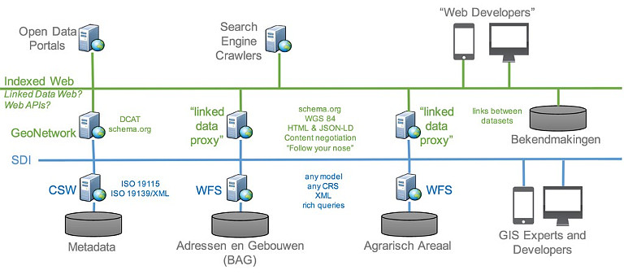
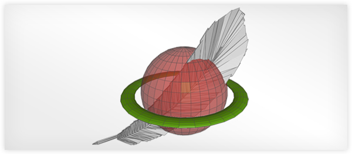
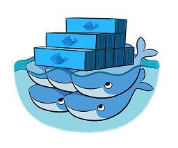

API for geospatial data
@tomkralidis @JMendesDeJesus @normanbarker @perrygeo @justb4 @pvgenuchten
version: August 25, 2019
I. WMS, WFS, WCS, WPS have served us well
Characteristics
- Key Value Parameters (KVP) or XML encodings
- Requests using HTTP GET, HTTP POST and SOAP
- Responses as XML (GML)
- Error handling ExceptionReport in response
Issues with WFS v1/2
- Highly verbose
- Highly dependent on XML technologies
- Verbose documentation (WFS 2.0 has 239 pages)
- OGC document from 2010
- No unique urls for features
- Features hard to index by search engine
- "In-band" error reporting
- Not "webby"
Change was needed
- Geonovum testbed showed OGC world can easily be made crawlable, and crafted LDProxy
II. A New Era is Upon Us
RESTFul
- REST is a MUST
- Fast and interactive standards' development
- Standards' development should be developer-friendly
What is REST ???
- REpresentational State Transfer (REST)
- Uses HTTP's verbs (GET/POST/DELETE)
- Uses HTTP's codes (200, 404, 201, etc)
- Uses URI to identify resources
- Content negotiation (ask for media-type)
- Stateless
- Very popular among developers
- Easy to understand
- JSON is king in REST webservices
- HTML encoding to support humans and search engines
- No rigid standards (good or bad)
III. Kickstarting WFS 3.0
WFS 3.0 Hackathon
- March 2018 - Fort Collins, CO, USA
- OGC-sponsored
- Develop WFS 3.0 based on Swagger/OpenAPI (v3)
- Write specification using GitHub
- First implementations
- pygeoapi was born on Valentine 2018!

IV. OpenAPI / Swagger
V. Rename to OGC API - Features
- Along WFS 3, OGC defined OGC API Common
- Resulting in WFS 3 being renamed to "OGC API - Features"
- Other OGC API's are arriving; tiles, catalog, coverage, processes
OGC API - Features Specification
github.com/opengeospatial/WFS_FES
Maintained in GitHub
Example
/collections /collections/countries /collections/countries/items /collections/countries/items/The_Netherlands
Data is structured and each Feature is a REST representation
OGC API - Features
Links
VI. pygeoapi
pygeoapi

Part of the amazing Geopython community in GitHub
pygeoapi
- A geospatial API framework - more than just a WFS v3 implementation
- OGC Compliant (already!)
- Access geospatial data via OGC APIs
- OSGeo Community Project (in Motion)
- Powered (default) by:
pygeoapi - technical
- Flask with REST support
- OpenAPI endpoint automatically generated
- Data provider agnostic (plugins)
- Docker Images
Data Providers
 |
 | ||
| Elasticsearch | CSV | Spatialite* | GeoJSON* |
* also via GDAL-OGR Provider
Data Providers - Cont
 |
| GDAL-OGR |
Data Providers - GDAL-OGR
- via OGR-Python bindings
- in theory ~100 Vector Formats!
- thus: WFS2, GeoPackage, Shapefile, GeoJSON, PostGIS, ...
- paging, reprojection, bbox/attr/id-query, auth
- ==> unlock existing WFS2s!

- HTML encoding is annotated as schema.org/Dataset to facilitate search engines
- Google dataset search locates pygeoapi datasets
Demo
pygeoapi - Roadmap
- More data providers
- Content negotiation (e.g. Response as GeoPackage, GML,...)
- Advanced filters (CQL)
- More OGC APIs: Tiles, Coverages, Processes, Catalog
pygeoapi - Links
VII. Docker and pygeoapi

Docker Images for geopython/pygeoapiDocker - Next
- Custom config via Docker Volume Mapping
- Run with Docker Compose
- Subpath running via Flask "SCRIPT_NAME" env var
- Examples in pygeoapi GitHub
VIII. pygeoapi in Production
Canadian National Water Data Archive
 https://glosis.isric.org
https://glosis.isric.org
- Global soil information system underdevelopment by FAO and ISRIC
- Using pygeoapi as an external API providing WFS3.0
- Testing JSON-LD for soil data distribution

IX. STAC
X. pygeoapi Support

Need support for OGC API - Features???
@Geocat can help you